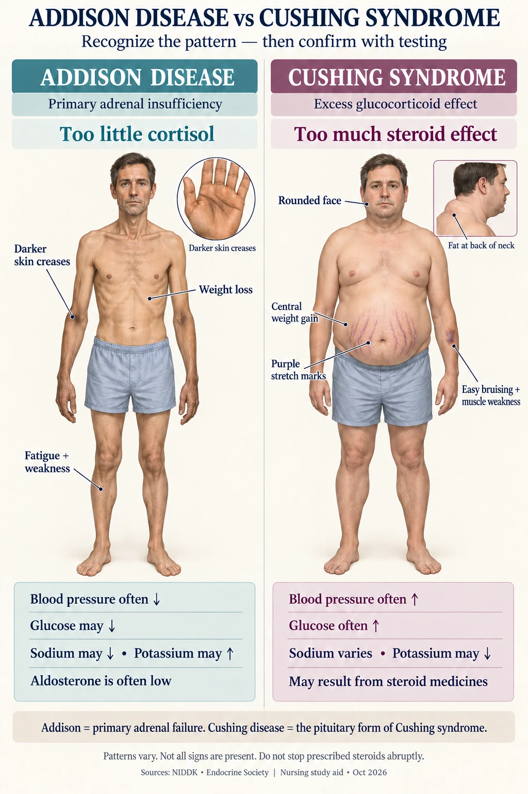

NG-287 · Nursing field notes
Addison & Cushing
Recognize the clues, interpret the hormone pattern and connect each condition to nursing care.

- Signals
CRH → ACTH → adrenal cortisol
- Patterns
Connect visible findings and hormone results.
- Testing
Use the correct test and timing.
- Crisis
Recognize urgent changes and activate help.
Addison: too little adrenal cortisol. Cushing: too much glucocorticoid effect. Findings are patterns, not a checklist every patient must match.
1. Hormones and feedback
Visual 01 · NG-287
The adrenal cortex has three zones
Read from the outside toward the center.
- GlomerulosaAldosterone · sodium and potassium handling
- FasciculataCortisol · metabolic and stress response
- ReticularisAdrenal androgens
- MedullaCatecholamines · sympathetic response
Sources: NIDDK: Adrenal insufficiency · NIDDK: Cushing syndrome
Visual 02 · NG-287
The cortisol feedback pathway
Signals travel down the pathway. Cortisol normally reduces further signaling.
HypothalamusReleases CRH.
Anterior pituitaryReleases ACTH in response to CRH.
Adrenal cortexProduces cortisol in response to ACTH.
Primary adrenal failure
Low cortisol with high ACTH suggests a problem in the adrenal gland. Aldosterone may also be deficient.
Central or steroid-related suppression
ACTH is low or inappropriately normal for the low cortisol. Aldosterone is usually preserved.
Sources: Endocrine Society: Primary adrenal insufficiency · Endocrine Society: Cushing diagnosis · Endocrine Society / ESE: Steroid-related adrenal insufficiency (2024)
2. Recognize the findings
Visual 03 · NG-287
Visible clues, side by side
These findings vary between people. Appearance supports an assessment; it does not establish a diagnosis.

Open the image at full size. The findings below remain readable on a phone.
Addison disease
- Fatigue, weight loss and orthostatic symptoms.
- In primary disease, darkening may appear in creases, scars or oral mucosa.
- Salt craving can accompany aldosterone deficiency.
Cushing syndrome
- Central weight gain and a rounded face.
- Wide purple striae, easy bruising and fragile skin.
- Proximal weakness and increased fracture risk.
Sources: NIDDK: Adrenal insufficiency · NIDDK: Cushing syndrome
Daily care in Addison disease
- Give prescribed replacement consistently.
- Monitor symptoms, blood pressure and ordered electrolytes.
- Individualize salt and fluid advice, especially during heat or heavy sweating.
- Inability to keep replacement tablets down requires the emergency plan and urgent help.
3. Cushing care
Daily care in Cushing syndrome
- Monitor glucose, blood pressure and infection signs. A normal temperature does not rule out infection.
- Protect fragile skin and support safe movement. Assess bone health.
- Treat the cause: supervised steroid adjustment, tumor-directed treatment or cortisol-lowering medicines.
- Individualize nutrition and potassium advice to laboratory values and comorbidities.
Sources: Endocrine Society: Cushing treatment
4. Compare and test
Visual 04 · NG-287
Compare patterns, not a single potassium value
Normal results do not automatically exclude either condition.
Sources: Endocrine Society: Primary adrenal insufficiency · Endocrine Society: Cushing diagnosis · NIDDK: Cushing syndrome
Visual 05 · NG-287
Different tests answer different questions
The clinician chooses the appropriate test and interprets assay-specific results.
Possible adrenal insufficiency
AssessReview symptoms, medicines and morning cortisol with ACTH when appropriate.
Test the responseAn ACTH stimulation test often assesses adrenal cortisol reserve.
Find the causeUse baseline ACTH and other testing to distinguish primary from central disease.
Early central disease may not be excluded by stimulation testing alone.
Possible Cushing syndrome
Review medicines firstInclude oral, injected, inhaled and topical glucocorticoids.
Test for endogenous excessUse a suitable late-night salivary cortisol, urine free cortisol or dexamethasone suppression test.
Confirm, then localizeFurther biochemical evaluation precedes cause-specific imaging.
A random cortisol or potassium result is not a screening shortcut.
Sources: Endocrine Society: Primary adrenal insufficiency · Endocrine Society: Cushing diagnosis
Visual 06 · NG-287
Timing changes the meaning of a cortisol test
This qualitative timeline describes a usual daytime sleep–wake schedule.
Usually higher cortisol
Levels generally decline
Usually lower cortisol
Sources: Endocrine Society: Cushing diagnosis · NIDDK: Cushing syndrome
5. Crisis and replacement
Visual 07 · NG-287
Adrenal crisis is an emergency
Severe hypotension, vomiting, weakness or altered mental status in an at-risk person needs urgent evaluation.
Activate urgent helpSupport airway, breathing and circulation. Obtain IV access and monitor closely.
Treat promptlyGive prescribed parenteral hydrocortisone and isotonic fluids. Add glucose when indicated.
Reassess and treat the triggerFollow blood pressure, glucose and electrolytes. Address infection, fluid losses or missed replacement.
Sources: Endocrine Society: Primary adrenal insufficiency · Endocrine Society / ESE: Steroid-related adrenal insufficiency (2024)
Visual 08 · NG-287
Replacement and tapering are different plans
A single descending dose graph cannot show the right plan for everyone.
Hormone replacement
- Primary adrenal insufficiency usually needs ongoing glucocorticoids.
- Add mineralocorticoid replacement when aldosterone is deficient.
- Use the prescribed sick-day plan, medical identification and emergency injection training.
Reducing prescribed steroids
- The plan depends on exposure, the underlying disease and adrenal recovery.
- Long-term steroids should not be stopped abruptly without guidance.
- Not every short course needs a taper.
Sources: Endocrine Society: Primary adrenal insufficiency · Endocrine Society / ESE: Steroid-related adrenal insufficiency (2024) · Endocrine Society: Cushing treatment
Practice the distinctions
1. Can potassium reliably distinguish Addison disease from Cushing syndrome?
No. Potassium may be normal in either. It is one clue in a broader hormone and clinical assessment.
2. Why can primary adrenal insufficiency darken the skin?
Low cortisol removes feedback and ACTH rises. The increased ACTH-related signaling can increase pigmentation.
3. Does steroid-induced Cushing syndrome mean the body is making high cortisol?
No. Prescribed glucocorticoids can cause excess steroid effects while suppressing endogenous ACTH and cortisol.
4. What does Cushing disease specifically mean?
The pituitary ACTH-secreting cause of Cushing syndrome.
5. What is urgent when a person with adrenal insufficiency is vomiting and hypotensive?
Activate emergency care and the prescribed emergency steroid plan. Treat suspected crisis promptly with parenteral hydrocortisone and fluids under protocol.
6. Does one adrenalectomy always require lifelong replacement?
No. Replacement depends on the disease, remaining function and recovery. Both glands removed requires lifelong replacement.
7. Does every short steroid course need a taper?
No. Follow the prescribed plan. Exposure duration, dose and clinical context matter.
8. Which cortisol tests can screen for endogenous Cushing syndrome?
Suitable tests include late-night salivary cortisol, urinary free cortisol and dexamethasone suppression testing. Medication history comes first.